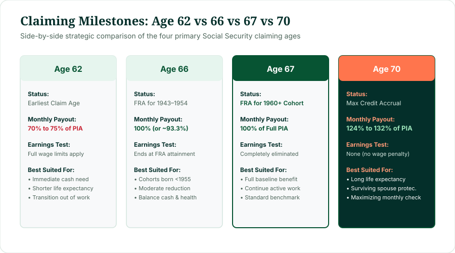
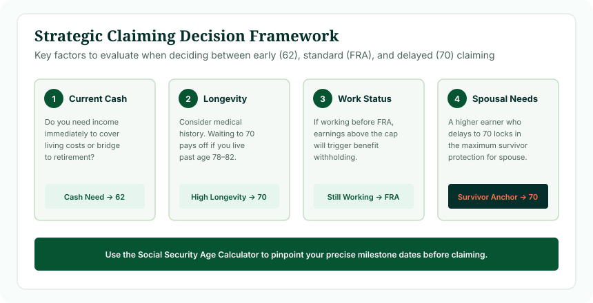

There is no universally single "best" age for everyone. Age 62 provides immediate cash flow with a permanent 30% reduction (for 1960+ cohorts). Age 66 was the historical Full Retirement Age for those born between 1943 and 1954. Age 67 is the statutory Full Retirement Age for anyone born in 1960 or later, paying 100% of your Primary Insurance Amount without wage caps. Age 70 maximizes your monthly benefit at 124% of PIA through delayed retirement credits. For a 1960+ cohort, claiming at 70 yields a monthly check 77.1% larger than claiming at 62.
One of the most consequential financial decisions in an adult life is choosing the exact date to file for Social Security. Many pre-retirees search for a social security calculator age 66 vs 70 or try to weigh the permanent reductions of age 62 against the patience required for age 67. The spread between claiming at the earliest possible age (62) and delaying until the maximum age (70) is more than 77% per month. Understanding the statutory mechanics of social security age 62 vs 66 vs 67 vs 70 allows you to align your filing strategy with your health, career, and household financial goals.
1. The Core Differences Between the Four Ages
Each of the four major claiming ages represents a distinct legal and mathematical milestone under Title II of the Social Security Act:

Figure 1: Strategic comparison of the four primary Social Security claiming milestones.
- Age 62 (The Gateway): Earliest allowable retirement claim. Permanent lifetime reduction. Subject to strict wage limits under the Retirement Earnings Test.
- Age 66 (The Transition Baseline): Historical FRA for workers born 1943–1954. For workers born in 1960+, claiming at 66 results in an unreduced PIA minus 6.67% early penalty.
- Age 67 (The Modern Standard): Statutory Full Retirement Age for all workers born in 1960 or later. Pays 100% of PIA. Earnings test disappears completely.
- Age 70 (The Benefit Cap): Maximum statutory delay benchmark. Earns 24% to 32% in Delayed Retirement Credits over PIA. Credits cease accruing at 70.
2. Comprehensive 4-Way Comparison Table
The table below summarizes the statutory properties of each claiming age for an individual born in 1960 or later (whose FRA is 67) with a hypothetical Primary Insurance Amount (PIA) of $2,000 per month:
| Claiming Age | Status for 1960+ Cohort | Payout as % of PIA | Monthly Benefit ($2,000 PIA) | Retirement Earnings Test |
|---|---|---|---|---|
| Age 62 | Earliest Claim Age (60 mos early) | 70.0% (-30.0% penalty) | $1,400 / mo | Active (withholding applies) |
| Age 66 | Early Claim (12 mos early) | 93.3% (-6.67% penalty) | $1,867 / mo | Active (withholding applies) |
| Age 67 | Full Retirement Age (FRA) | 100.0% (Full baseline) | $2,000 / mo | Eliminated (unlimited wages) |
| Age 70 | Maximum Delay (36 mos delayed) | 124.0% (+24.0% bonus) | $2,480 / mo | Eliminated (unlimited wages) |
3. Claiming at Age 62: Earliest Access
Filing at age 62 provides immediate liquidity. You gain up to 60 additional monthly checks before your Full Retirement Age. For individuals who cannot work due to physical strain, chronic health issues, or involuntary unemployment, claiming at 62 provides an indispensable economic safety net.
However, the financial trade-off is steep: your benefit is permanently cut by 30%. Because all subsequent annual Cost-of-Living Adjustments (COLAs) are calculated as percentages of your base benefit, starting with a lower dollar amount permanently suppresses the compounding growth of your monthly income.
4. Claiming at Age 66: Historical FRA & Moderate Early Claiming
For millions of Americans born between 1943 and 1954, age 66 was their statutory Full Retirement Age. Those individuals received 100% of their PIA with zero early reduction.
For modern retirees born in 1960 or later, claiming at 66 represents an early claim of exactly 12 months before their FRA of 67. The penalty for claiming 12 months early is modest: 12 × (5/9 of 1%) = 6.67% reduction (paying 93.33% of PIA). Many individuals who wish to retire slightly before 67 find that claiming at 66 strikes a comfortable middle ground between cash flow and payout preservation.
5. Claiming at Age 67: The Full Baseline
For everyone born in 1960 or later, age 67 is your statutory Full Retirement Age. Claiming at 67 ensures:
- 100% of Your PIA: You receive your exact earned primary benefit with zero reduction.
- Complete Freedom from the Earnings Test: You can earn unlimited wages from an employer or self-employment without having any Social Security checks withheld.
- Unrestricted Delay Rights: If you reach 67 and realize you don't need the money yet, you can choose to delay filing month-by-month to earn 8% annual credits until age 70.
6. Claiming at Age 70: Maximum Payout Cap
Delaying claims until age 70 maximizes your guaranteed monthly check. Between age 67 and 70, you earn Delayed Retirement Credits of 8% per year (two-thirds of 1% per month), resulting in a 24% permanent increase above your full PIA.
Age 70 is also the single most effective way to optimize surviving spouse protection. If the higher-earning spouse delays until 70, they lock in the largest possible monthly check for the rest of their life. After their death, the surviving spouse inherits that exact elevated amount, protecting against household income drops in late retirement.
Remember: delayed retirement credits stop accruing at age 70. There is zero benefit to waiting until 71.
7. Why Your Birth Year Governs the Math
When comparing 62 vs 66 vs 67 vs 70, you must first verify your statutory Full Retirement Age:
- If you were born in 1954, your FRA was 66. Age 62 was 75% of PIA, and age 70 was 132% of PIA.
- If you were born in 1958, your FRA is 66 years and 8 months. Age 62 is 71.67%, and age 70 is 126.67%.
- If you were born in 1960 or later, your FRA is 67. Age 62 is 70%, and age 70 is 124%.
8. Head-to-Head: Age 62 vs Age 67
For modern retirees with an FRA of 67, the comparison between 62 and 67 involves weighing 60 monthly checks against a 30% lifetime haircut:
The 62 vs 67 Trade-off
By age 67, the 62 claimant has collected 60 checks totaling $84,000. However, starting at age 67, the person who waited receives $600 more every month. The cumulative cash break-even point occurs around age 78 years and 8 months. If you live past 79, claiming at 67 produces greater cumulative lifetime income.
9. Head-to-Head: Age 66 vs Age 70
Comparing age 66 vs 70 is the classic debate between ending work at standard retirement age versus maximizing late-life income:
- For older cohorts (FRA 66), waiting until 70 was a choice between 100% and 132% of PIA (a 32% increase).
- For modern cohorts (FRA 67), claiming at 66 yields 93.3% of PIA, while waiting until 70 yields 124% of PIA. That represents a 32.9% increase in monthly benefit between age 66 and 70.
- The break-even point between age 66 and age 70 typically arrives around age 81 to 83.
10. Head-to-Head: Age 62 vs Age 70 (The 77% Spread)
Comparing the two extremes of the claiming spectrum reveals the maximum statutory contrast:
Under an FRA of 67, receiving 124% of PIA at age 70 compared to 70% of PIA at age 62 produces a 77.1% increase in monthly cash flow (1.24 ÷ 0.70 = 1.7714). For every $1,000 an individual receives at 62, they would receive $1,771 at age 70. The break-even age between 62 and 70 typically occurs around age 80 to 81.
11. Strategic Decision Framework: Which Age Fits You?
Evaluating the optimal claiming milestone requires balancing four personal criteria:

Figure 2: Four-pillar analytical framework for choosing your optimal claiming age.
- Health and Projected Longevity: If you face chronic illness or have a shortened life expectancy, claiming earlier (62 or 65) ensures you receive benefits while you can use them. If you are healthy with family history of living into your nineties, delaying until 70 provides powerful longevity insurance.
- Current Cash Needs & Other Assets: If you have substantial 401(k), IRA, or taxable savings, using those funds to bridge expenses while letting Social Security grow at a guaranteed 8% per year until 70 is difficult to replicate in the financial markets.
- Active Employment Status: If you are still earning significant wages, claiming before your FRA (at 62 or 66) triggers earnings test withholdings, making delay the default choice.
- Spousal and Survivor Dynamics: If you are the primary earner, delaying until 70 protects your surviving spouse by locking in the maximum possible survivor benefit.
12. Full Retirement Age Sets the Foundation
You cannot evaluate claiming at 62, 66, or 70 in a vacuum. Your statutory Full Retirement Age is the mathematical baseline from which all percentage adjustments originate. Before debating early versus delayed claiming, you must know your exact statutory FRA milestone date.
13. Important Distinction: Age Calculator vs Benefit Dollar Calculator
Our Social Security Age Calculator calculates exact chronological milestones and statutory dates (your exact day and month for age 62, FRA, and age 70). It does not compute personalized dollar estimates, because calculating exact dollars requires your complete 35-year historical earnings record maintained confidentially by the Social Security Administration. To view your personal dollar estimates, create a personal account at SSA.gov.
14. Worked Dollar Comparison Scenarios
Review how monthly income and break-even trajectories compare across three hypothetical retirees with an unreduced PIA of $2,500 at FRA 67:
Retiree 1: Claims at Age 62
Monthly Payout: $2,500 × 70% = $1,750 / month.
Cumulative Benefits by Age 67: 60 months × $1,750 = $105,000 received.
Cumulative Benefits by Age 85: 276 months × $1,750 = $483,000 (excluding COLAs).
Retiree 2: Claims at Age 67 (FRA)
Monthly Payout: $2,500 × 100% = $2,500 / month.
Cumulative Benefits by Age 67: $0.
Cumulative Benefits by Age 85: 216 months × $2,500 = $540,000 (surpasses Age 62 claimant at age 78.7).
Retiree 3: Delays Until Age 70
Monthly Payout: $2,500 × 124% = $3,100 / month.
Cumulative Benefits by Age 70: $0.
Cumulative Benefits by Age 85: 180 months × $3,100 = $558,000 (surpasses Age 62 claimant at age 80.4 and Age 67 claimant at age 82.5).
15. Working While Claiming Across the Ages
How employment affects your benefits varies sharply across each claiming milestone:
- At Age 62 through Month Before FRA: Earnings test applies ($1 withheld for every $2 above $23,400).
- In the Calendar Year You Reach FRA: Higher earnings threshold applies ($62,160 limit; $1 withheld for every $3 above).
- At FRA (Age 67) and Age 70: The earnings test is 100% eliminated. You can earn any amount of salary or consulting fees without losing a single dollar of benefits.
Calculate Your 62, FRA & 70 Milestone Dates
Enter your birth date in our Social Security Age Calculator to see your exact calendar attainment dates for age 62 early access, Full Retirement Age, and age 70 maximum delay.
Calculate My Milestone Dates Now →16. Frequently Asked Questions
What is the difference between claiming Social Security at 62, 66, 67, or 70?
Age 62 is the earliest claiming age with a 30% permanent reduction for 1960+ cohorts. Age 66 was the FRA for workers born 1943–1954. Age 67 is the full statutory FRA for workers born 1960 or later, paying 100% of PIA. Age 70 is the maximum benefit cap, paying 124% of PIA through delayed retirement credits.
How much more do you get at 70 compared to 62?
For someone born in 1960 or later, claiming at 70 yields 124% of PIA, whereas claiming at 62 yields 70% of PIA. Dividing 124% by 70% shows that the monthly check at age 70 is approximately 77.1% higher than at age 62.
What is the break-even age between claiming at 62 vs 70?
The cumulative cash break-even age between claiming at 62 and waiting until 70 is typically between ages 78 and 82, depending on cost-of-living adjustments, tax brackets, and investment return assumptions.
Can you work full-time if you claim at 66 or 67?
Yes. Once you reach your statutory Full Retirement Age (whether 66 for older cohorts or 67 for modern cohorts), the Retirement Earnings Test is eliminated. You can earn an unlimited salary without losing any Social Security benefits.
Does delaying until 70 increase spousal or survivor benefits?
Delaying to 70 increases the survivor benefit that a surviving spouse can inherit. However, it does not increase spousal benefits while both partners are alive, which are capped at 50% of the worker's PIA at FRA.
Is age 70 the mandatory claiming age?
No. The government never forces you to claim benefits. However, delayed retirement credits stop accruing at age 70, so delaying past 70 permanently forfeits monthly income with zero additional reward.
What if you claim at 62 and regret it?
If within 12 months of filing, you can withdraw your application (Form SSA-521) and repay all received benefits. Alternatively, upon reaching Full Retirement Age, you can suspend your benefits to start earning delayed retirement credits up to age 70.
How does birth year change the 62 vs 67 comparison?
Your birth year determines your Full Retirement Age baseline. For workers born in 1960 or later, FRA is 67. For those born before 1955, FRA is 66, meaning age 67 already included one year of delayed credits (+8%).
Does the Social Security Age Calculator calculate dollar amounts?
No. The tool calculates exact chronological age milestones and statutory entitlement dates. Exact dollar estimates require personal lifetime earnings records maintained by the Social Security Administration.
When should you claim Social Security?
The optimal claiming age depends on individual circumstances: health and family longevity, current cash flow needs, whether you are still earning wages, and marital survivor protection strategies.
19. Reviewed & Methodology
This comparison is based on the statutory claiming rules and benefit schedules published under Title II of the Social Security Act and Title 20 of the Code of Federal Regulations.
- Statutory Reference: Social Security Act Section 202(q) (early reduction formula); Section 202(w) (Delayed Retirement Credits); Section 216(l) (Full Retirement Age schedule); 20 C.F.R. §§ 404.313, 404.409, 404.410.
- Actuarial Context: Percentage comparisons reflect unreduced Primary Insurance Amounts (PIA). Actual household financial optimization should account for income taxes, Medicare Part B premiums, and survivor benefit interactions.
- Educational Disclaimer: This guide provides general informational and mathematical analysis. It does not provide personalized investment, legal, or tax advice. Consult the Social Security Administration or a licensed financial professional for individual claiming determinations.
- Last Editorial Review: October 2026 by Navjeet Kamboj.